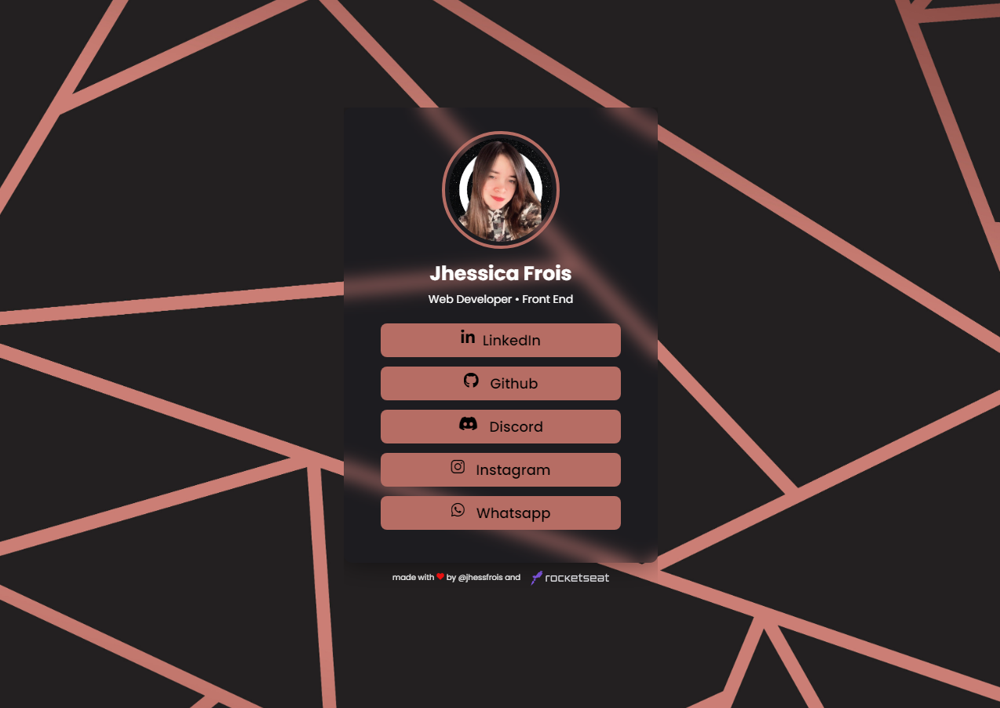

30 a 08 de Julho de 2022
Insta Links

Segundo projeto que foi desenvolvido em mais uma edição da Maratona
Explorer da Rocketseat. Na 2ª edição desenvolvemos um agrupador de
links no estilo do famoso Linktree. Esse pequeno projeto pode ser
totalmente personalizado com imagens, ícones e qualquer outro elemento
que o usuário tenha vontade de colocar no projeto.